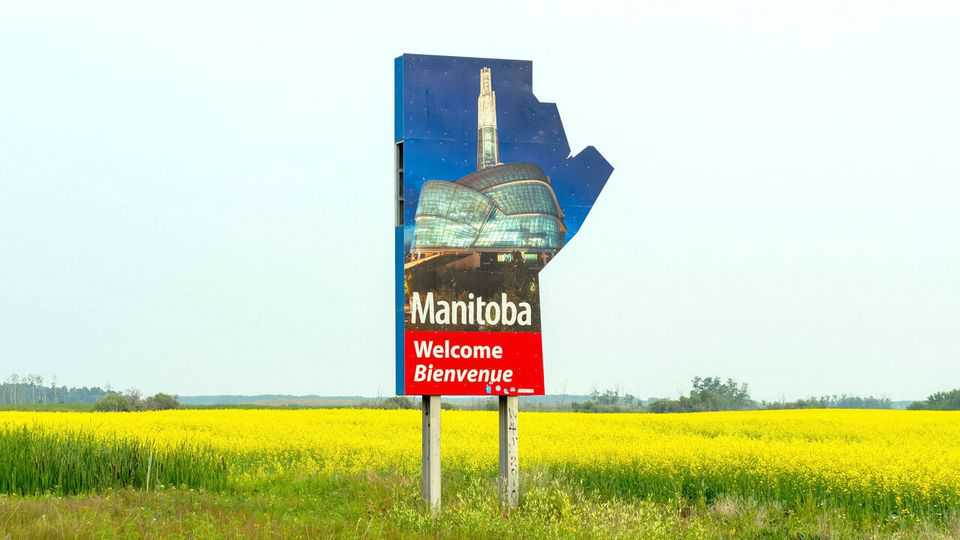

How Filipino immigrants revitalised a small Canadian town
And how Mark Carney’s immigration curbs threaten the model

Jul 30th 2026
Neepawa has white-picket fences, a curling rink and a hockey arena, just like any other small town in southern Manitoba, one of Canada’s prairie provinces. But it also has something more unusual. More than half of Neepawa’s 5,600 residents are from the Philippines. This share has almost doubled since 2016. The differences in lifestyle are obvious. “Hot there, cold here,” grins one woman while shovelling snow.
That so many Filipinos have settled in Neepawa is largely thanks to HyLife, a pork-meat processor, which employs a third of the town. Since it started operating in 2008 the firm has recruited hundreds of Filipinos to Canada to work as butchers. Most arrive on temporary-worker visas, work hard and gain permanent residence. Their families join them. Some seek employment elsewhere or start businesses of their own. Their integration into Neepawa has revitalised the town.
Ashley arrived in 2015 to join her husband, who had worked at HyLife for four years. The snow made it feel “like an enchanted kingdom”, she says. She still loves Neepawa. She and her husband now work at two jobs each. They and their three children have become Canadian citizens after passing a rigorous test. Her Canadian-born colleague jokes: “She knew more about Canada than we did.”
There are now six Filipino-owned businesses on Neepawa’s small high street. Vego’s Home Pinoy Restaurant was opened by Catherine Vego, a Filipino, who moved from Winnipeg to join the community. Other immigrants are arriving, too. The town has its own taxi service, founded recently by an Indian. “It’s crazy…for middle-of-the-prairies Manitoba,” says Marilyn Crewe, the town’s economic-development officer, who has helped many Filipinos navigate business regulations and the routes to home ownership.
Neepawa has a dozen churches, but congregations had been dwindling. Filipinos have revived them. St Dominic’s has seen numbers at Sunday mass balloon to 300 thanks to immigrant attendees. “We need a few of them,” chuckles a man whose church merged with another to survive.
There are problems. Population growth strains infrastructure. The council forecasts a shortfall of 460 housing units by 2028. Neepawa’s schools are oversubscribed. Job agencies are flooded with emails from Filipinos who have heard about the town. They are directed to HyLife, but some are exploited by traffickers.
And politics have been changing. Mark Carney, Canada’s prime minister, is cutting the number of visas issued to temporary workers and students. About 687,000 students and workers arrived in 2024, the year before he was elected; he plans to issue 385,000 such visas in 2026.
It has also become harder to gain permanent residence. The number accepted fell by a quarter between 2024 and 2025, from 484,000 to 394,000. Neepawa residents felt the change. “We’re so sad,” says one Filipino businessman, whose brother was denied residency. A Filipino woman is distraught after her boyfriend, a construction worker, returned to Mexico after being denied citizenship.
Mr Carney is responding to discomfort about the pace of demographic change expressed by some Canadians. One of them, Darren, runs the bar at Neepawa’s Royal Canadian Legion, a club for military veterans. A 5-tonne German schwere Feldhaubitze howitzer, seized during the first world war, stands at the door. Darren is a fan of Donald Trump. But he praises his Filipino neighbours for celebrating Canada Day more than his “own freaking community” and for reviving the town: “This would be a have-not town, if it wasn’t for HyLife.”
Nonetheless, he is frustrated. Newcomers have “stretched our infrastructure and our health care to the limits”. He believes that immigrants were bought in to keep “the government in power” and that “Canadians were, like, left out.” It seems Mr Carney is listening more closely to Darren than to Canada’s newer citizens. ■